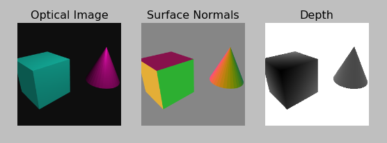

Example: Rendering¶
The following script reads an existing scene from a ".blend" file and renders 3 versions of the same image: an optical image, a surface normal map, and a depth map:
#!/usr/bin/env python
from os.path import dirname, join
from matplotlib.pyplot import axis, imshow, show, subplot, title
from numpy import amax, amin, minimum
from fauxton import DepthSensor, SurfaceNormalSensor, read_scene
#===============================================================================
# Rendering
#===============================================================================
scene_path = join(dirname(__file__), 'scene.blend')
scene = read_scene(scene_path)
optical_sensor = scene['Camera']
normal_sensor = scene.add(SurfaceNormalSensor(pose=optical_sensor.pose))
depth_sensor = scene.add(DepthSensor(pose=optical_sensor.pose))
optical_image = optical_sensor.render()
normal_image = normal_sensor.render()
depth_image = depth_sensor.render()
#===============================================================================
# Visualization
#===============================================================================
def show_scaled(image, plot_name):
image = minimum(image, 10)
image -= amin(image)
image /= amax(image)
title(plot_name)
axis('off')
imshow(image)
subplot(1, 3, 1); show_scaled(optical_image, 'Optical Image')
subplot(1, 3, 2); show_scaled(normal_image, 'Surface Normals')
subplot(1, 3, 3); show_scaled(depth_image, 'Depth')
show()
Output:
